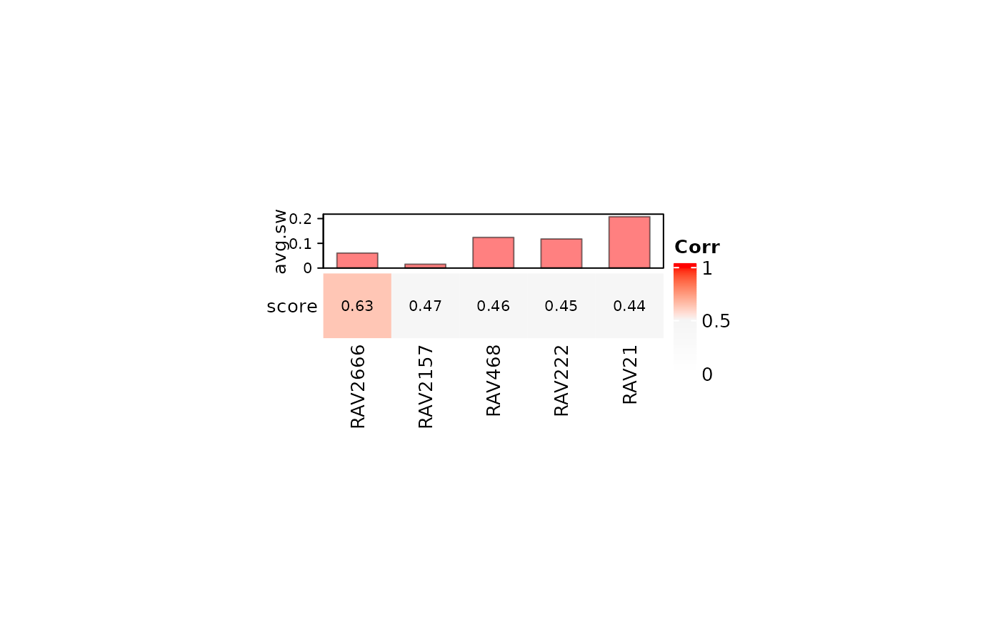
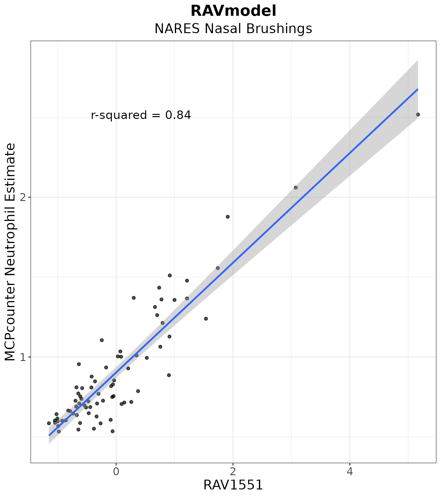

vignettes/NARES/neutrophil_counts_NARES.Rmd
neutrophil_counts_NARES.RmdIn this vignette, we are reproducing Figure 3D of the multiPLIER paper and expand the analysis using GenomicSuperSignature.
if (!"GenomicSuperSignaturePaper" %in% installed.packages())
devtools::install_github("shbrief/GenomicSuperSignaturePaper")
suppressPackageStartupMessages({
library(GenomicSuperSignature)
library(GenomicSuperSignaturePaper)
library(dplyr)
library(RColorBrewer)
library(ComplexHeatmap)
})To directly compare with the results from multiPLIER paper, we used the RAVmodel annotated with the same priors: bloodCellMarkersIRISDMAP, svmMarkers, and canonicalPathways.
RAVmodel <- getModel("PLIERpriors", load=TRUE)
RAVmodel
#> class: PCAGenomicSignatures
#> dim: 13934 4764
#> metadata(7): cluster size ... updateNote version
#> assays(1): RAVindex
#> rownames(13934): CASKIN1 DDX3Y ... CTC-457E21.9 AC007966.1
#> rowData names(0):
#> colnames(4764): RAV1 RAV2 ... RAV4763 RAV4764
#> colData names(4): RAV studies silhouetteWidth gsea
#> trainingData(2): PCAsummary MeSH
#> trainingData names(536): DRP000987 SRP059172 ... SRP164913 SRP188526
updateNote(RAVmodel)
#> [1] "536 refine.bio studies/ top 90% varying genes/ GSEA with 3 priors from PLIER (bloodCellMarkersIRISDMAP, svmMarkers, and canonicalPathways)"NARES (Grayson et al., 2015) is a nasal brushing microarray dataset that includes patients with ANCA-associated vasculitis, patients with sarcoidosis and healthy controls among other groups. In the multiPLIER paper, NARES data was projected into the MultiPLIER latent space.
exprs <- readr::read_tsv("data/NARES_SCANfast_ComBat_with_GeneSymbol.pcl") %>%
as.data.frame
rownames(exprs) <- exprs$GeneSymbol
dataset <- as.matrix(exprs[,3:ncol(exprs)])
dataset[1:2, 1:4]
#> N1004 N1007 N1017 N1025
#> A1BG 0.05641348 0.06333364 0.001833597 -0.05897817
#> NAT2 -0.14980276 -0.09186388 -0.093684629 -0.06080664NARES data doesn’t have any information about the cell type composition of the samples. So in the multiPLIER paper, the authors applied MCPcounter (Becht, et al. Genome Biology. 2016.) , a method for estimating cell type abundance in solid tissues.
As multiPLIER paper, we tested whether the neutrophil-associated RAV is well-correlated with the neutrophil estimates.
devtools::install_github("ebecht/MCPcounter",
ref = "a79614eee002c88c64725d69140c7653e7c379b4",
subdir = "Source",
dependencies = TRUE)
mcp.results <- MCPcounter::MCPcounter.estimate(exprs.mat,
featuresType = "HUGO_symbols")
mcp.melt <- reshape2::melt(mcp.results,
varnames = c("Cell_type", "Sample"),
value.name = "MCP_estimate")
readr::write_tsv(mcp.melt, "data/NARES_ComBat_MCPCounter_results_tidy.tsv")RAV1551, neutrophil-associated RAV based on SLE-WB dataset, is not found in the top 5 validated RAVs of NARES dataset, implying that neutrophil count is not the major feature of NARES dataset.
val_all <- validate(dataset, RAVmodel)
validated_ind <- validatedSignatures(val_all, num.out = 5, swCutoff = 0, indexOnly = TRUE)
heatmapTable(val_all, num.out = 5, swCutoff = 0)
sampleScore <- calculateScore(dataset, RAVmodel)
## Remove Sample category "gene"
gene_ind <- which(mcp.melt$Sample == "Gene")
mcp.melt <- mcp.melt[-gene_ind,]
## Subset sampleScore to join with MCPcounter
sampleScore_sub <- sampleScore[, 1551] %>% as.data.frame
sampleScore_sub <- tibble::rownames_to_column(sampleScore_sub)
colnames(sampleScore_sub) <- c("Sample", "RAV1551")
## Join with MCPcounter neutrophil estimates
dat <- dplyr::filter(mcp.melt, Cell_type == "Neutrophils") %>%
dplyr::inner_join(y = sampleScore_sub, by = "Sample")
head(dat, 3)
#> Cell_type Sample MCP_estimate RAV1551
#> 1 Neutrophils N1004 0.6064648 -0.09409653
#> 2 Neutrophils N1007 1.8775036 1.91008170
#> 3 Neutrophils N1017 0.6006657 -0.92446139Here is the plot between RAV1551-assigned sample score vs. neutrophil estimate.
plot <- LVScatter(dat, "RAV1551",
y.var = "MCP_estimate",
ylab = "MCPcounter Neutrophil Estimate",
title = "RAVmodel",
subtitle = "NARES Nasal Brushings")
plot
r sessionInfo() #> R version 4.1.0 (2021-05-18) #> Platform: x86_64-pc-linux-gnu (64-bit) #> Running under: Ubuntu 18.04.5 LTS #> #> Matrix products: default #> BLAS: /usr/lib/x86_64-linux-gnu/openblas/libblas.so.3 #> LAPACK: /usr/lib/x86_64-linux-gnu/libopenblasp-r0.2.20.so #> #> locale: #> [1] LC_CTYPE=en_US.UTF-8 LC_NUMERIC=C #> [3] LC_TIME=en_US.UTF-8 LC_COLLATE=en_US.UTF-8 #> [5] LC_MONETARY=en_US.UTF-8 LC_MESSAGES=en_US.UTF-8 #> [7] LC_PAPER=en_US.UTF-8 LC_NAME=C #> [9] LC_ADDRESS=C LC_TELEPHONE=C #> [11] LC_MEASUREMENT=en_US.UTF-8 LC_IDENTIFICATION=C #> #> attached base packages: #> [1] grid parallel stats4 stats graphics grDevices utils #> [8] datasets methods base #> #> other attached packages: #> [1] ComplexHeatmap_2.8.0 RColorBrewer_1.1-2 #> [3] dplyr_1.0.6 GenomicSuperSignaturePaper_1.0.0 #> [5] GenomicSuperSignature_1.1.3 SummarizedExperiment_1.22.0 #> [7] Biobase_2.52.0 GenomicRanges_1.44.0 #> [9] GenomeInfoDb_1.28.0 IRanges_2.26.0 #> [11] S4Vectors_0.30.0 BiocGenerics_0.38.0 #> [13] MatrixGenerics_1.4.0 matrixStats_0.59.0 #> [15] BiocStyle_2.20.0 #> #> loaded via a namespace (and not attached): #> [1] colorspace_2.0-1 ggsignif_0.6.1 rjson_0.2.20 #> [4] ellipsis_0.3.2 rio_0.5.26 rprojroot_2.0.2 #> [7] circlize_0.4.12 XVector_0.32.0 GlobalOptions_0.1.2 #> [10] fs_1.5.0 rstudioapi_0.13 clue_0.3-59 #> [13] farver_2.1.0 ggpubr_0.4.0 bit64_4.0.5 #> [16] fansi_0.5.0 splines_4.1.0 codetools_0.2-18 #> [19] doParallel_1.0.16 cachem_1.0.5 knitr_1.33 #> [22] jsonlite_1.7.2 Cairo_1.5-12.2 broom_0.7.6 #> [25] cluster_2.1.2 dbplyr_2.1.1 png_0.1-7 #> [28] readr_1.4.0 BiocManager_1.30.15 compiler_4.1.0 #> [31] httr_1.4.2 backports_1.2.1 assertthat_0.2.1 #> [34] Matrix_1.3-4 fastmap_1.1.0 cli_2.5.0 #> [37] htmltools_0.5.1.1 tools_4.1.0 gtable_0.3.0 #> [40] glue_1.4.2 GenomeInfoDbData_1.2.6 rappdirs_0.3.3 #> [43] Rcpp_1.0.6 carData_3.0-4 cellranger_1.1.0 #> [46] jquerylib_0.1.4 pkgdown_1.6.1 vctrs_0.3.8 #> [49] nlme_3.1-152 iterators_1.0.13 xfun_0.23 #> [52] stringr_1.4.0 openxlsx_4.2.3 lifecycle_1.0.0 #> [55] rstatix_0.7.0 zlibbioc_1.38.0 scales_1.1.1 #> [58] ragg_1.1.2 hms_1.1.0 yaml_2.2.1 #> [61] curl_4.3.1 memoise_2.0.0 ggplot2_3.3.3 #> [64] sass_0.4.0 stringi_1.6.2 RSQLite_2.2.7 #> [67] highr_0.9 desc_1.3.0 foreach_1.5.1 #> [70] filelock_1.0.2 zip_2.2.0 shape_1.4.6 #> [73] rlang_0.4.11 pkgconfig_2.0.3 systemfonts_1.0.2 #> [76] bitops_1.0-7 evaluate_0.14 lattice_0.20-44 #> [79] purrr_0.3.4 labeling_0.4.2 bit_4.0.4 #> [82] tidyselect_1.1.1 magrittr_2.0.1 bookdown_0.22 #> [85] R6_2.5.0 magick_2.7.2 generics_0.1.0 #> [88] DelayedArray_0.18.0 DBI_1.1.1 mgcv_1.8-36 #> [91] pillar_1.6.1 haven_2.4.1 foreign_0.8-81 #> [94] abind_1.4-5 RCurl_1.98-1.3 tibble_3.1.2 #> [97] crayon_1.4.1 car_3.0-10 utf8_1.2.1 #> [100] BiocFileCache_2.0.0 rmarkdown_2.8 GetoptLong_1.0.5 #> [103] readxl_1.3.1 data.table_1.14.0 blob_1.2.1 #> [106] forcats_0.5.1 digest_0.6.27 tidyr_1.1.3 #> [109] textshaping_0.3.4 munsell_0.5.0 bslib_0.2.5.1